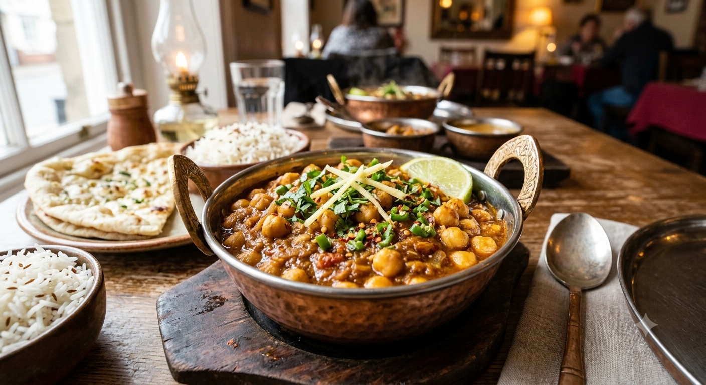

Chana Masala
Home

Description
Chana Masala is a classic Indian chickpea dish packed with rich plant-based protein and tangy, savory spices.
Tender chickpeas are simmered in an onion-tomato gravy infused with warm spices like cumin, coriander, turmeric,
and garam masala. It is a fully vegan, deeply satisfying staple that works perfectly as a central dish for any
vegetarian meal.
Beyond its incredible taste, Chana Masala is renowned for its simplicity and wholesome nutritional profile. A
final splash of fresh lemon juice right before serving cuts through the warmth of the spices, giving the curry a
bright, refreshing finish that pairs wonderfully with flatbreads or plain rice.
Ingredients
- cups of cooked (or canned) chickpeas
- 1 tbsp cooking oil
- 1 finely chopped onion
- 2 pureed tomatoes
- 1 tsp ginger-garlic paste
- 1 tsp ground cumin
- 1 tsp ground coriander
- 1/2 tsp turmeric powder
- 1 tsp garam masala
- 1 tbsp lemon juice
- salt to taste
- fresh cilantro for garnish
Steps
- Heat oil in a saucepan over medium heat, then add the chopped onion and ginger-garlic paste, sautéing until
lightly browned.
- Pour in the pureed tomatoes along with the cumin, coriander, turmeric, garam masala, and salt, stirring
until the spices become fragrant.
- Add the cooked chickpeas and 1/2 cup of water, mixing everything together thoroughly.
- Cover and simmer on low heat for 10 to 12 minutes, allowing the chickpeas to absorb the gravy.
- Remove from heat, stir in the fresh lemon juice, and top with fresh cilantro before serving.